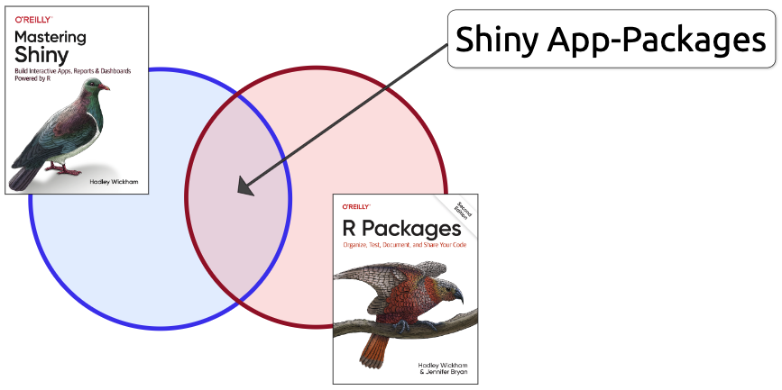

Shiny App-Packages
Getting your app into an R package
Welcome
Shiny App-Packages covers how to create a Shiny application as an R package.


Shiny combines the power of R’s statistical capabilities with the interactivity of a web-based application.
R packages are collections of pre-built, self-contained code, data, and documentation designed to perform operations or accomplish tasks beyond the capabilities of the R language.

What is in this book

This book is a resource to help ‘connect the dots’ between building scalable Shiny applications and writing R packages. Adopting R package development practices in the early stages of your Shiny app will improve the reusability, maintainability, and shareability of all your hard work.
For continuity, I’ve used code and data from the excellent Building Web Applications with Shiny (BWAS) course. The learning modules in BWAS also serve as ‘prerequisites’ for many of the chapters covered here (if you haven’t completed that course, be sure you understand the topics it covers). You’ll find each section in this book also includes a dedicated GitHub repository and branch for you to follow along.
What is not in this book
This book isn’t a replacement for Mastering Shiny, R Packages, 2ed (or Writing R Extensions), or Engineering Production-Grade Shiny Apps. I highly suggest bookmarking those resources to return and read when you’d like to learn more about package development.
I also won’t be recommending a particular Shiny framework or package, but I’ll cover a few popular choices, show you what they are doing ‘under the hood,’ and let you decide if you’d like to adopt some of their practices.
What I assume about you
If you’re reading this, I assume you’re comfortable with R, Posit Workbench, Shiny, and the tidyverse. Maybe you haven’t built a ton of applications, but you understand reactivity, and you’re comfortable with the core Shiny concepts (i.e., the UI, server, *_Input(), *_Output(), and render_* functions, etc.).
Code examples
The code files for each chapter are stored in GitHub repositories. Major code changes are stored in branches. Whenever a new branch or repo is used, you’ll see the Git Branch icon with a link to the repo in the margin.

This section’s code is in the 09.2_inst-bslib branch of moviesApp.
In an effort to make each section accessible and easy to follow, I’ve created an R package for the code examples:
https://mjfrigaard.github.io/shinypak/
Sections also include the code for installing, loading, and launching applications using shinypak:
“Install the
shinypakpackage package to easily launch the applications:”# install.packages('pak') pak::pak('mjfrigaard/shinypak') shinypak::launch('09.2_inst-bslib')